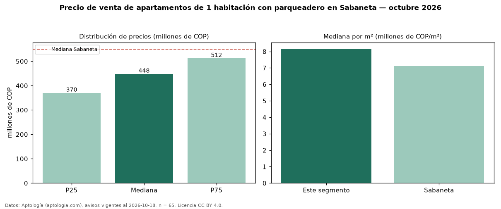

Precio de venta de apartamentos de 1 habitación con parqueadero en Sabaneta — octubre 2026
En Sabaneta, la mediana de precio de venta de apartamentos de 1 habitación con parqueadero es COP 448 millones, según 65 avisos vigentes. Eso es 16 % más que la mediana de los apartamentos de 1 habitación en venta de Sabaneta (COP 388 millones, n = 108); este segmento reúne el 60 % de esos avisos. Por metro cuadrado, la mediana es COP 8,14 millones/m² (n = 62), 4 % por encima de los apartamentos de 1 habitación en venta de Sabaneta (COP 7,86 millones/m²). El área mediana anunciada es 53 m². La administración mediana declarada es COP 290.000 al mes (n = 43). El estrato más frecuente es 4 (68 % de los avisos con estrato). La mediana de todos los apartamentos en venta de Sabaneta es COP 550 millones (−19 % de diferencia). La mitad central de los avisos va de COP 370 millones a COP 512 millones (razón 1,4), una dispersión baja. Datos: Aptología (aptologia.com), CC BY 4.0 — https://www.aptologia.com/venta/sabaneta. Archivos: PDF, CSV con las cifras y gráfica PNG.

| Avisos únicos | 65 |
|---|---|
| Percentil 25 | COP 370.000.000 |
| Mediana | COP 448.000.000 |
| Percentil 75 | COP 512.000.000 |
| Mediana por m² | COP 8.143.540 |
Fuente: avisos vigentes de portales inmobiliarios recopilados por Aptología, deduplicados (mínimo 30 avisos únicos por celda). Precios pedidos, no cerrados. Fecha: 2026-10-18.